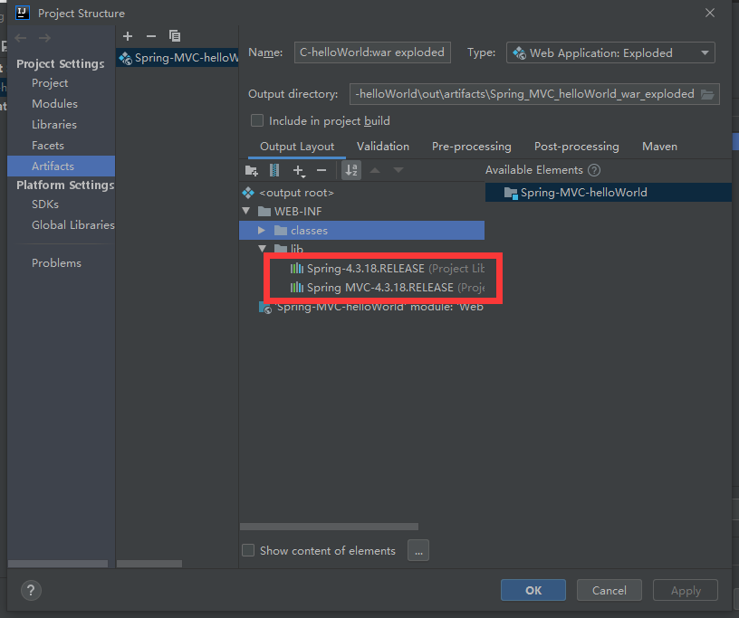
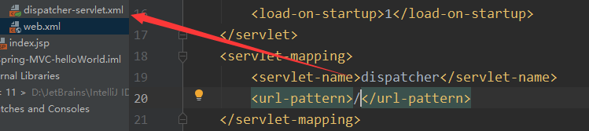
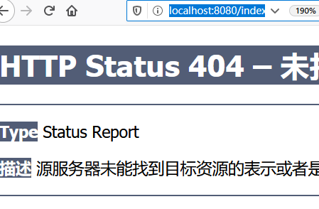

12.12 SPRING MVC入门及一些坑
•Spring 为展现层****提供的基于 MVC 设计理念的优秀的 Web 框架，是目前最主流的 MVC 框架****之一
•Spring3.0 后全面超越 Struts2，成为最优秀的 MVC 框架
•Spring MVC 通过一套 MVC 注解，让 POJO 成为处理请求的控制器，而无须实现任何接口。
•支持 REST 风格****的 URL 请求
•采用了松散耦合可插拔组件结构，比其他 MVC 框架更具扩展性和灵活性
IDEA建立Spring MVC Hello World 详细入门教程
https://www.cnblogs.com/wormday/p/8435617.html
Spring MVC的HELLOWORLD当中的一些坑
用IDEA创建HELLOWORLD 的时候

要手动添加这两个包到lib下，不然怎么运行都开不起来 同时WEB-INF底下会有报错！
1 |
的作用：告诉 SPRINGMVC 这个方法 用什么方法来处理这个请求
这个/helloworld中的/可以省略 习惯了比较好

如果不指定配置文件位置，默认会找一个/WEB-INF/XXX-servlet.xml
这里的xxx是前端控制器的名字

URL-PATTERN
1 | <servlet-mapping> |
/拦截所有请求 不拦截jsp页面
/* 拦截所有请求 （相当于完全覆盖了所有的资源 所以我们写/就可以了）
写/* 的话访问jsp会出现这个效果：（控制台报错）
1 | mapping found for HTTP request with URI [/index.jsp] in DispatcherServlet with name 'dispatcher' |

处理*.jsp是tomcat做的事 这是因为DefaultServlet是Tomcat中用来处理静态资源了
除了JSP 和servlet外剩下的都是静态资源
index.html：静态资源：tomcat会在服务器下找到这个资源并返回
重写了大web.xml中的资源
为什么jsp能访问？因为我们没有覆盖JspServlet的资源
- 服务器的web.xml中有一个DefaultServlet是url-pattern=/
- 我们配置中前端控制器url-pattern=/
- 项目中小web.xml都是继承于服务器中大web.xml
- 小web.xml 相当于子类 重写了父类的方法
一个方法只能处理一个请求
RequestMapping的属性：
method：限定请求方式 RequestMethod.GET/ POST/…….
params
1
2
3
4
5
public String handle01(){
System.out.println("RequestMappingControllerTester..handle01");
return "success";
}url中必须有username，比如
http://localhost:8080/haha/handle01?username=111
才可以
@RequestMapping(value = “/handle01” ,params = {“!username”},method = RequestMethod.GET)
url中必须不包含username，比如
http://localhost:8080/haha/handle01
才可以,不然会报错
1
handleNoSuchRequestHandlingMethod No matching handler method found for servlet request: path '/haha/handle01', method 'GET', parameters map['username' -> array<String>['111']]
headers
consumes
produces